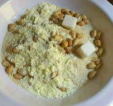

Garri Soaking is a popular Nigerian dessert made with Garri. As the name implies, it is made by soaking Garri in water or milk.
A more appropriate English name for Garri will be granulated cassava or cassava granules. Coarse-grained cassava also works.
Garri soaked in water helps to provide a certain amount of energy which aids a healthy life. When soaked in cold water, it also reduces reduces the body temperature especially during the hot weather.
This is a meal that has stood the test of time, and is still going strong.
In Africa, most especially in Nigeria, garri is a great saviour, Remember that time you were in boarding school when you were too hungry to wait for dinner and garri soakings saved? Correct, today I will show you to take your Soakings skills to the next level.